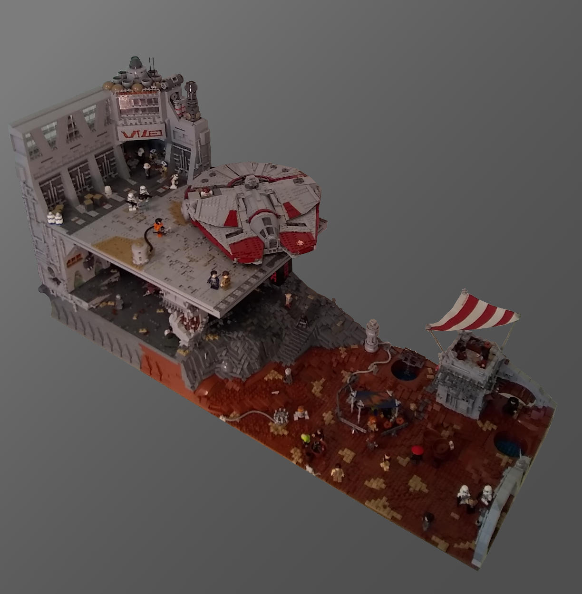
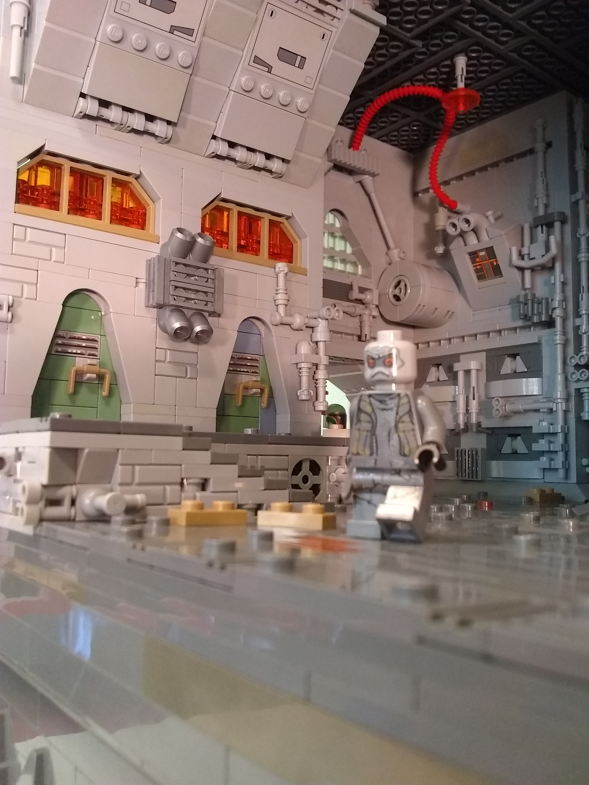
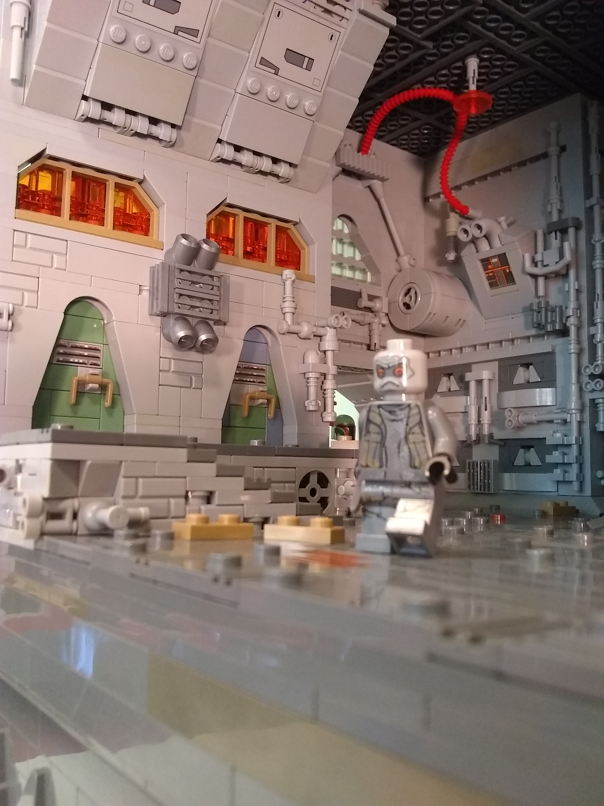

Interview with Parzifal1
The ninth episode in the RebelLUG Interview series
03/12/19
1. First of all, who are you and what social media platforms are you found on?
Hi I'm Emeth (Parzifal1 on YouTube and Instagram)
2. Which social media platform is your favorite, or which one do you prefer to visit, and what content do you like to browse and/or produce on each?
While I prefer to browse Instagram looking at concept art, I plan in the future to move towards posting my mocs on Flickr.
3. How long have you been building with LEGO, and how long have you been involved in the LEGO community? Where and when did you start posting online?
I've been seriously building with Lego for nearly three years now. Building is a hobby of mine that really emerged towards the end of highschool when I actually needed something fun to do and relax. I really started posting builds online right around the time the movie Rogue One released. Somehow I managed to see the RebelLug contest, and it inspired me to come out of my dark age. My building wasn't particularly good at the time (I didn't win), but it was a learning experience that sparked my interest. I first started posting my builds on YouTube, however my video quality hasn't been the best. In the future I see myself returning to the platform after I've taught myself basic editing skills.
4. Where do you draw inspiration? Are there any certain builders or MOCs that inspire you? Or do you get inspired outside of LEGO?
I primarily draw inspiration for my builds from the unused concept art of Lucasfilm artists. However I do (at the moment) have a deep appreciation for the cyberpunk aesthetic. As far as my non Star Wars builds which I seldom post- I draw my inspiration from many of my travels abroad in Asia and the Middle East/North Africa.
5. What's your favorite theme or subject to build in? Why do you find it so appealing?
Right now I'd say building urban/alien landscapes in the Star Wars universe is the most appealing to me, because it allows me to creatively world build and approach creating unique at atmospheres not often seen in such builds. The real reason I have stayed in this niche is that the majority of the Lego Star Wars community builds very similar mocs to each other; and I feel like that stifles their imagination and the technique improvisation that make Lego the fulfilling hobby that it is. I really perceive myself as trying to approach the Star Wars genre builds from a very different direction.
6. What is your favorite hobby or social activity outside of building? How do you spend your time outside of the LEGO realm?
Outside of building I really enjoy pole vaulting, but because of the intensity of school and work I haven't managed to do it in almost a year. Apart from that I would say I spend the majority of my free time at my schools inter faith dialogue club.
7. What are your favorites (music, movies, books, etc.)?
As far as music goes, I really enjoy listening to coldwave, and ethereal wave; with my currently favorite artist being Brendan Perry- the singer of Dead Can Dance. My favorite movie is probably Less Than Zero, but I also have a profound appreciation for The original Blade Runner, and Monty Python's Life of Brian. My favorite book is probably the Picture of Dorian Gray.
8. What's an aspect of the LEGO community that you would want to change?
One aspect of the Star Wars community I desperately want to change is the likelihood that everyone builds the same thing with the same techniques. I've really been let down by people building Scariff and Crait without bringing anything new to the table.
9. What is your favorite MOC that you’ve built? Or the one you’re most proud of?
As far as mocs go, I'd probably be proudest of my latest (untitled) work.

 
